Everything you need to trace funds across a blockchain, organize what you find, and turn it into a document a court will accept, without writing a line of code.
This document and the software it describes are the proprietary and confidential property of Daubert AI. It is provided to authorized personnel, retained experts, and partners under an obligation of confidentiality. Do not copy, distribute, or disclose it, in whole or in part, to any other party without written authorization.
If you read only three sections: 01 for the mental model, 04 so your expert profile is built before your first matter, and 10 before you draft anything that will be filed.
Running alongside all of it: the Data Room (the case's file cabinet) and Productions (the things you hand to counsel: reports, charts, chronologies, declarations and redlines).
Daubert never invents on-chain facts. Every wallet, amount and timestamp on a trace was fetched from a public blockchain and can be clicked through to the block explorer. Your labels and your narrative are the only interpretive layer, and exactly the part you will be cross-examined on.
Daubert lives at app.dauberts.ai. Sign in with Google, Microsoft, or a one-time code sent to your email.
Your invite is a single-use link tied to one specific email address. If you sign in with any other address, even another address of your own, Daubert will refuse the invite and tell you which address it belongs to.
So if the link was issued to jane.doe@yourfirm.com, sign in
with that Google, Microsoft or email-code identity. Not a
personal Gmail. Not an alias.
Daubert does not send invitation emails. Whoever adds you generates a link and sends it to you themselves, usually by email or chat. The link carries your role and expires.
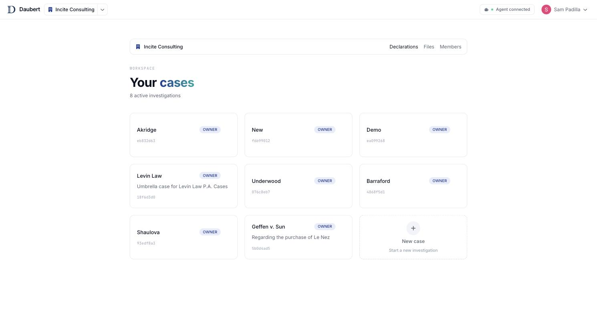
You have a role in the firm and a role on each case. The firm role sets your default; a case can override it.
| Firm role | What it means | Default on a case |
|---|---|---|
| Admin | Runs the organization: members, invites, settings. | Owner of every case |
| Member | The normal staff role. Can create new cases. | Editor on every case |
| Guest | Outside counsel or a contractor. Sees case names only. | Nothing. Needs an explicit invite |
| Case role | Can do |
|---|---|
| Owner | Everything, including adding and removing case members. |
| Editor | Trace, label, upload files, create and edit productions, export. |
| Viewer | Read and download everything; cannot change anything. The AI assistant switches to read-only for you. |
It is almost always the guest rule: guests see a case exists but must be invited to it individually. Ask the case owner to add you. It takes them ten seconds under Settings → Members.
Open an empty case and Daubert walks you through three steps. All three are skippable, but doing them in order gets you to a draft declaration fastest.
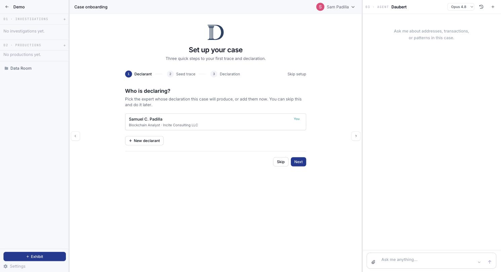
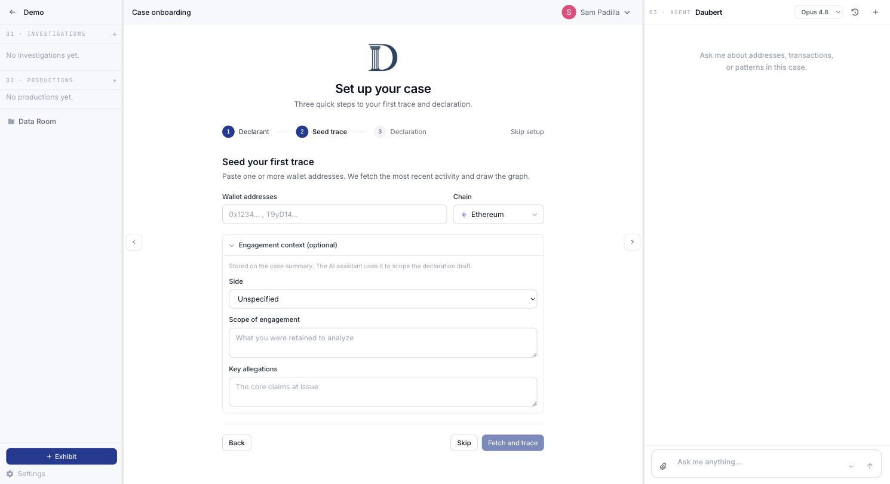
Fill in Side, Scope of engagement and Key allegations. They are stored on the case and quietly improve everything the assistant drafts for you afterwards. It stops guessing what you were retained to do.
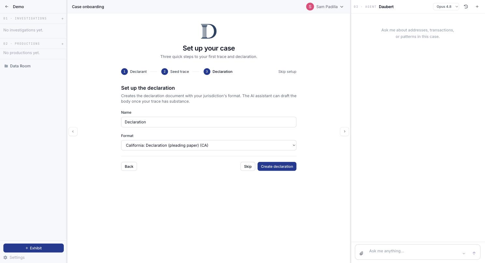
Once the case has at least one investigation the wizard is replaced by a small dismissible checklist in the corner of the graph: seed a trace, label key wallets, expand the flows, draft your declaration.
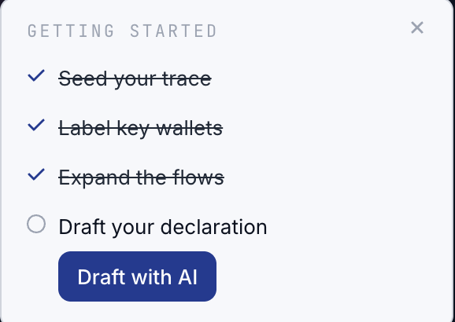
Build your expert profile once at the firm level and every declaration in every case can pull your qualifications in with a click. This is the single highest-leverage thing to do on day one.
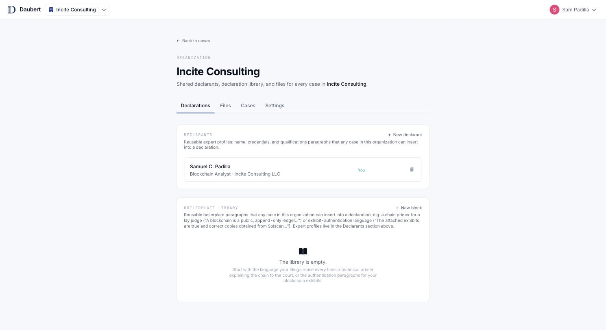
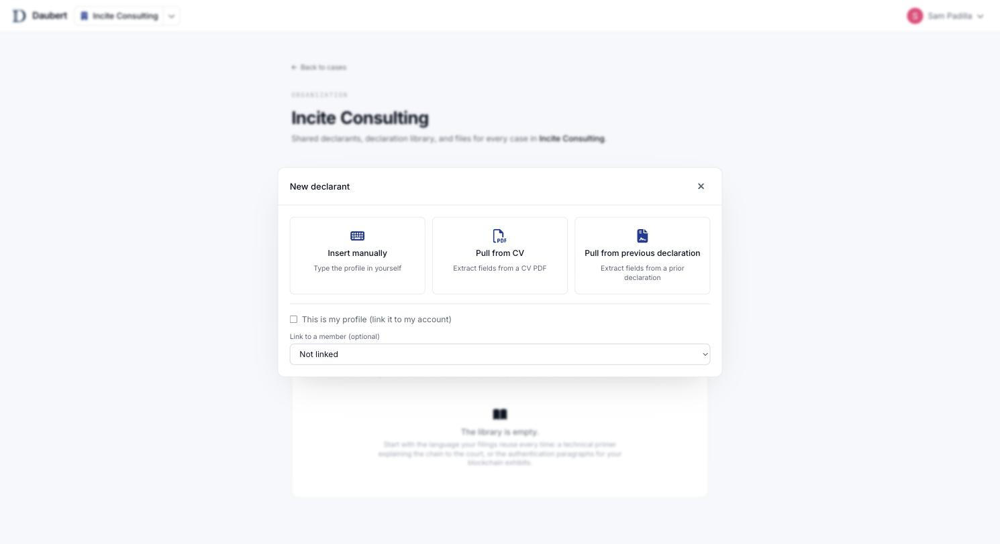
| Option | What happens |
|---|---|
| Insert manually | You type the profile: name, title, firm, qualification paragraphs, rate, prior testimony. |
| Pull from CV | Upload your CV as a PDF (up to 10 MB). Daubert extracts your credentials into draft qualification paragraphs. |
| Pull from previous declaration | Upload a declaration you have already filed. Daubert lifts the qualifications section, which is usually the cleanest source. |
Extraction produces a draft shown to you in a review step. Read every line before saving. It leaves fields blank rather than guessing.
Beneath the roster sits a library of reusable paragraphs shared by the whole firm: the chain primer you write for a lay judge, the exhibit-authentication language you use every time. Save it once, insert it into any declaration. Inserted copies are independent, so editing one does not touch the original.
You can always edit your own profile. Firm admins can edit anyone's. Tick "This is my profile" when you create yours so it links to your account.
Every case opens into the same layout. Both side panels can be dragged wider or collapsed with the small arrows at their edges.
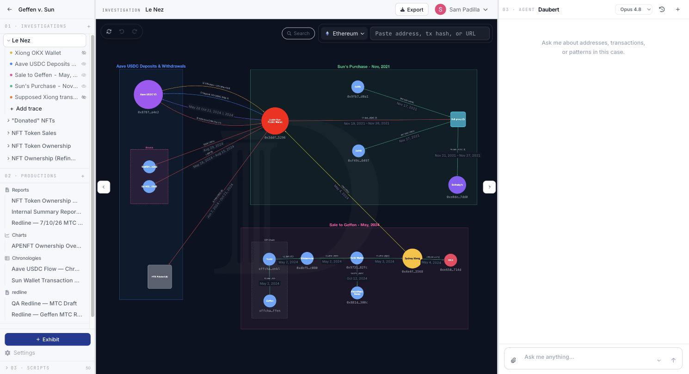
Investigations and their traces, all productions grouped by type, the Data Room, and your saved scripts. Click anything to open it in the center.
The trace diagram, or whichever production you opened. Nodes are wallets, arrows are transfers, boxes are groups you drew.
Case-scoped chat. It can read the graph, the files and the productions, and, if you are an editor, change them.
| On screen | Means |
|---|---|
| Node | A wallet address. Its default shape follows what kind of address Daubert thinks it is: an ordinary wallet, a smart contract, and a known exchange each get a different one. |
| Arrow | A transfer, or a bundle of transfers, from one wallet to another. Labeled with amount and date range. |
| Box around nodes | A group you drew to hold a narrative chapter, such as "Sun's Purchase, Nov 2021". You give it the title and the color. |
| Free-floating text | A label you placed on the canvas: a caption, an annotation, or an off-chain fact that did not come from a blockchain. |
Nothing about how a node looks is derived from the money. Color, size and shape are all set by hand, and any of them can be overridden on any node. A large red circle is large and red because somebody made it so, not because the amounts are big.
Use that deliberately. Styling is part of your narrative, so be ready to explain every choice you made in it.
An investigation is a line of inquiry, such as "NFT Token Ownership". Inside it, traces are separate diagrams or layers you can show and hide independently, so one investigation can carry the deposits, the withdrawals and the sale as three toggleable views of the same story. Use the eye icon beside each trace to hide it.
Everything on a trace starts as a fetch from a public blockchain. You choose what to pull, then you choose what it means.
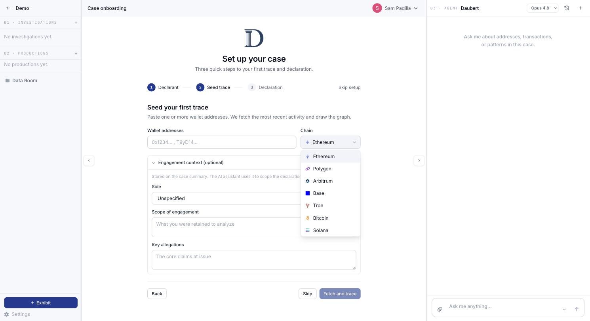
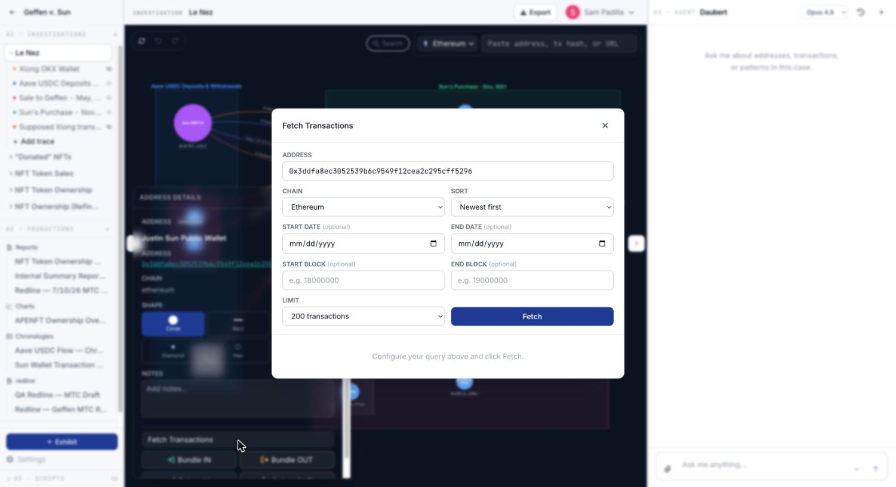
A busy exchange wallet can have hundreds of thousands of transactions. Pulling all of them is slow and buries the story in noise. Set a date range around the events at issue and keep the limit modest. You can always fetch again.
Not sure how to scope it? Ask the AI. Describe what you are looking for in plain language, something like "this wallet is enormous, I only care about transfers to Sotheby's around November 2021, what range should I pull?", and it will work out the bounds and can run the fetch for you.
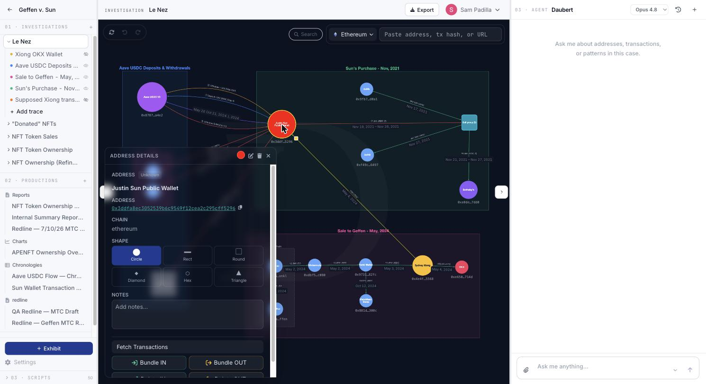
A hex string means nothing to a judge. "Sotheby's" or "Justin Sun Public Wallet" means everything. Daubert also carries a registry of known entities (exchanges, bridges, mixers, well-known public wallets) that the assistant can look up for you. Anything it cannot identify stays unlabeled until you can support the identification.
Use the Notes field on every wallet you label to record why: a public attribution, a produced document, an exchange subpoena response. When you are asked on the stand how you knew wallet X was the defendant's, that note is your answer.
| Look for | What it does | Where |
|---|---|---|
| Bundle IN | Collapses every incoming transfer from the selected wallets into one summarizing arrow, so dozens of small movements stop crowding the diagram. | Address Details panel |
| Bundle OUT | The same for outgoing transfers. | Address Details panel |
| Group within trace | Select several nodes, name the group, and Daubert draws a titled box around them. Each group becomes a chapter of your narrative. | Panel that appears when you select more than one node |
| Hide / Show | Turns a whole trace off so you can show one flow at a time. The icon flips to a crossed-out eye once hidden. | Beside each trace in the sidebar, and on right-click |
| Search | Finds an address, a transaction hash or a pasted explorer URL anywhere in the case. | Top of the canvas |
The right-hand panel is a chat window with one important difference: it can see your case, and it can do work in it.
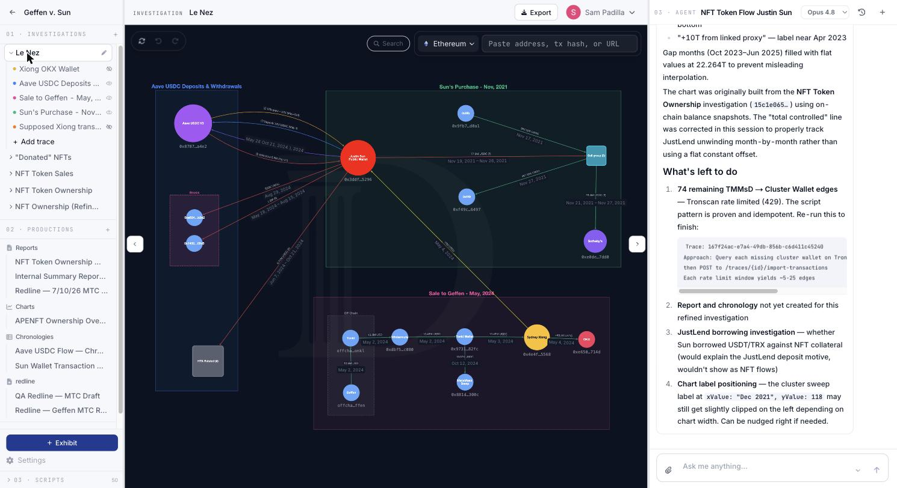
The graph, every production, the entity registry, and the files in your Data Room.
Pull transaction history for a wallet and import it onto the graph.
Draft reports, build charts, assemble chronologies, draft declaration sections, propose redline edits.
Write and run small scripts against blockchain data for work too repetitive to do by hand.
| Instead of | Ask |
|---|---|
| "Analyze this case" | "Summarize every transfer between the Sun wallet and Sotheby's between Nov 2021 and Jan 2022, with dates and amounts." |
| "Write my declaration" | "Draft the FINDINGS section from the Le Nez investigation. One numbered paragraph per transfer, citing the exhibit for each." |
| "Make a chart" | "Chart the Sun wallet's APENFT balance monthly from Jun 2021 to Nov 2025, marking the 20T approval threshold." |
Name the investigation, name the wallets, name the date range. The assistant is precise when you are.
The dropdown at the top of the chat picks the underlying model. The default is the strongest and is the right choice for analysis and drafting. Lighter models are faster and cheaper for simple lookups and reformatting.
Read every paragraph the assistant drafts before it goes anywhere near a filing. Check the numbers against the graph and the graph against the block explorer. You sign the declaration; the assistant does not. Treat its output as a competent associate's first draft: useful, and never final.
On cases where your role is Viewer the assistant runs in read-only mode. It will answer questions but will not modify the case. The chat box tells you so.
Every case has one automatically. It is where the produced documents, subpoena responses, exchange records and draft filings live, and it is what the redlining workflow reads from.
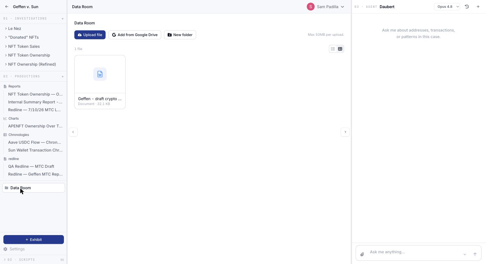
The Data Room keeps its own access log. Upload, download, delete: each one is written down with who did it and when, as part of the operation itself. You do not have to remember to record anything.
| Your case role | In the Data Room |
|---|---|
| Viewer | Browse and download. |
| Editor | Everything above, plus upload, delete, and create or move folders. |
| Owner | Everything. |
To redline a draft (a declaration, a brief, a letter) it must first be in
the Data Room as a .docx or .pdf. Upload it here,
then create the redline production from it (see §09).
A production is anything you hand to counsel or file. There are five kinds. Create one from the + beside PRODUCTIONS in the sidebar, or ask the assistant to build it.
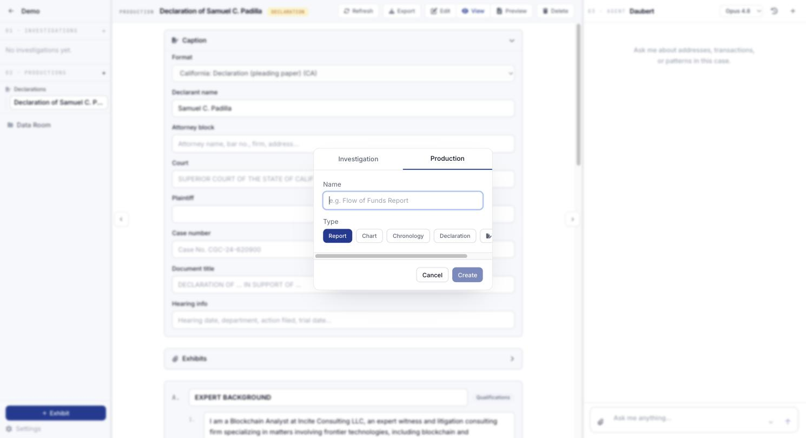
A free-form written document with headings, lists, bold and links. Use it for internal memos, one-pagers for counsel, and anything that does not need court formatting.
A data visualization: a balance over time, a distribution across wallets, volume by month. Annotate it with threshold lines and event markers so the chart makes the argument on its own.
A dated table of events, one row per transaction, with a source link straight to the block explorer. Add and reorder columns, and highlight rows that matter. Often the single most useful exhibit in a crypto matter.
A court-ready expert declaration, built against a structured schema rather than a blank page, and rendered in the correct format for the jurisdiction. Covered in detail in §10.
A true redline of a draft somebody else wrote, checked against the case's on-chain record. Covered in §11.
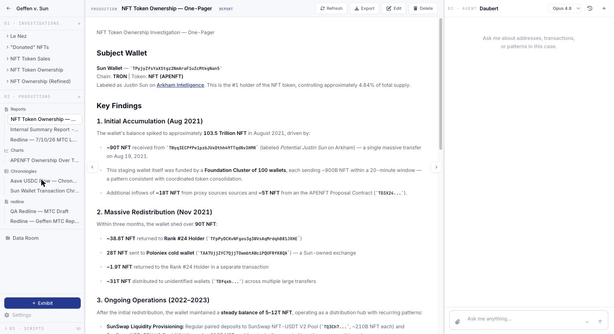
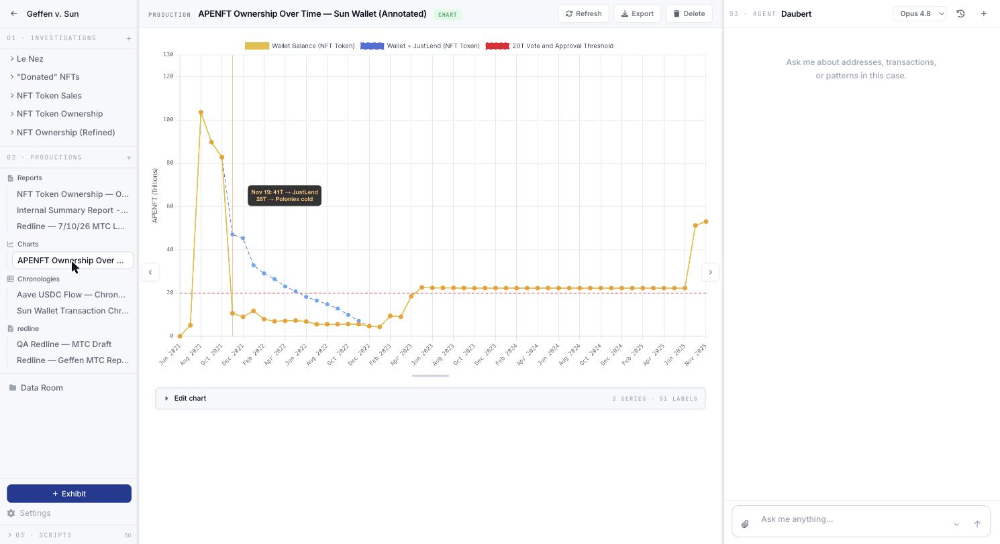
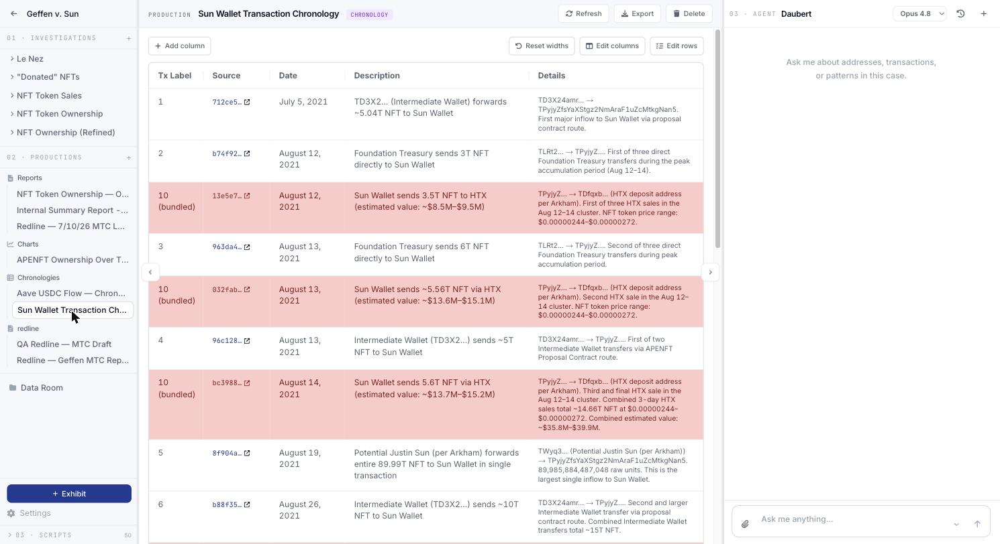
A declaration in Daubert is not a word processor document. It is a structured object (caption, sections, numbered paragraphs, exhibits, execution block) that gets rendered into your jurisdiction's format on the way out.
| Format | Authority | Rendering |
|---|---|---|
| California | C.C.P. § 2015.5 | 28-line pleading paper with the numbered gutter and per-page footer. The default. |
| New York | C.P.L.R. 2106 | Double-spaced affirmation with a bordered caption box. |
| Federal | 28 U.S.C. § 1746 | Generic federal unsworn declaration. |
| Texas | Civ. Prac. & Rem. Code § 132.001 | Jurat reciting date of birth and address, as the statute requires. |
| Florida | Fla. Stat. § 92.525 | Generic Florida declaration. |
The California and New York formats are modelled on filed documents. The Federal, Texas and Florida formats are careful best-effort renderings. Whichever you use, have filing counsel confirm the caption and local rules for the specific court before anything is filed.
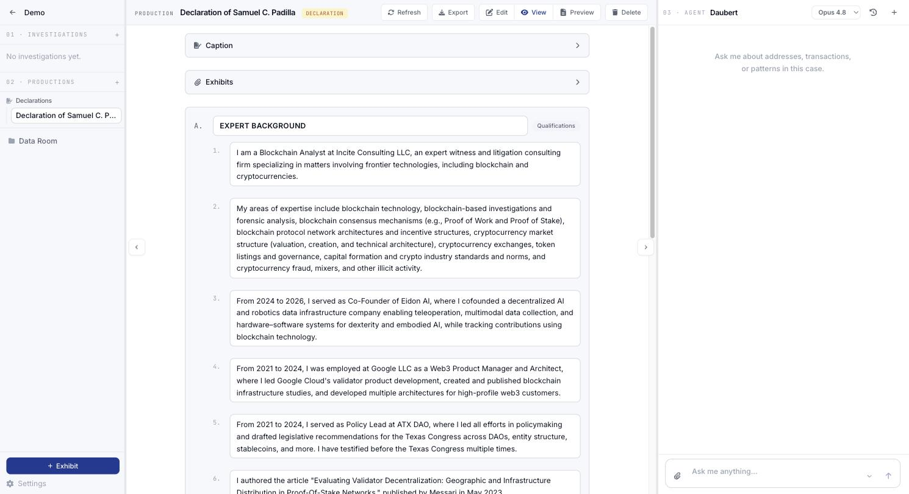
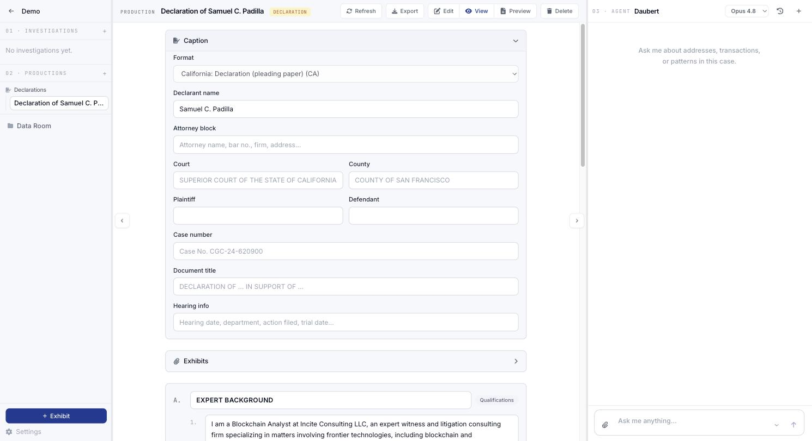
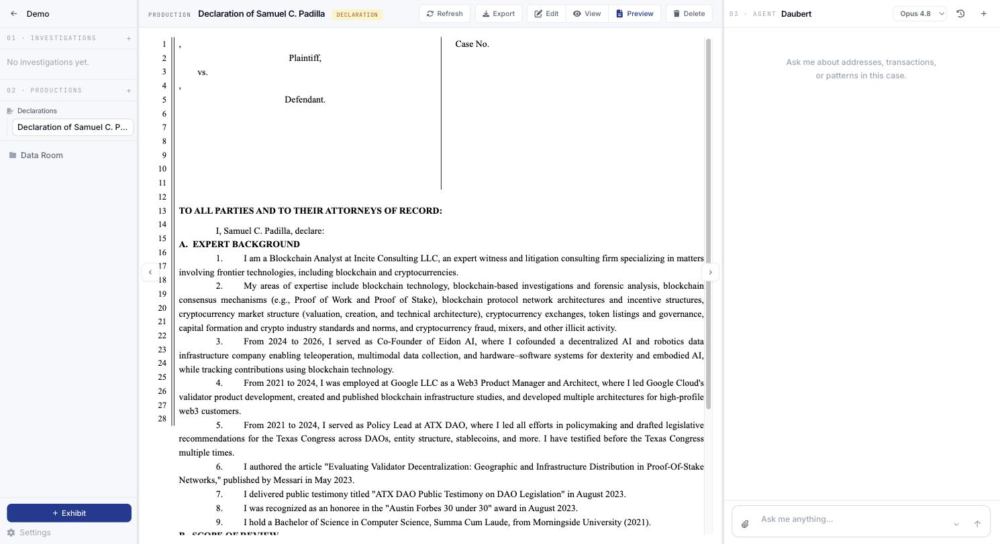
Add exhibits from the Exhibits panel and Daubert labels them A, B, C… automatically. Attach an exhibit to a paragraph and the citation stays correct even if you reorder. Each exhibit records where it came from: a transaction, a URL, a file, or something else.
Apply your declarant profile to fill Expert Background, insert boilerplate from the firm library for the technical primer, then ask the assistant to draft Findings from a named investigation. You are left editing rather than starting from a blank page, which is where your judgment is actually worth something.
Counsel sends you a brief, a letter or a draft declaration and asks whether the crypto facts are right. Redline is built for exactly that.
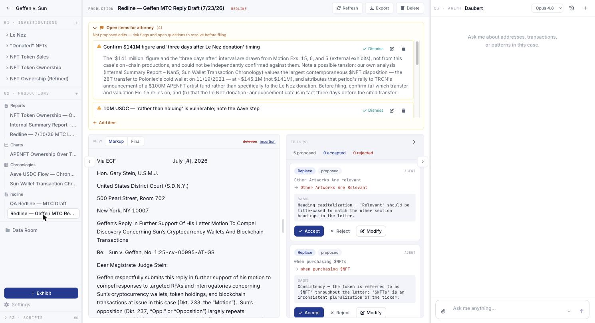
The original text is frozen at the moment the redline is created and cannot be edited, replaced or converted into another kind of production. Every proposed edit is anchored to a verbatim quotation from that frozen text. This is what makes the redline defensible: there is no way for the underlying document to have quietly shifted beneath the changes you approved.
| Kind | Use it for |
|---|---|
| Anchored edit | A specific span of text that is wrong and can be fixed by replacing, deleting, or inserting after it. |
| Reviewer note | Risk flags and open questions that are not a text change, such as "confirm this $141M figure against Ex. 15 before filing". |
Word export needs at least one accepted edit, and needs the source file still to be in the Data Room. If the source was a PDF there are no original Word bytes to mark up, so the export is a reconstruction and its filename says so. PDF export always works and renders only the edits you accepted.
Two routes out of Daubert: export one production, or bundle several into a single paginated exhibit.
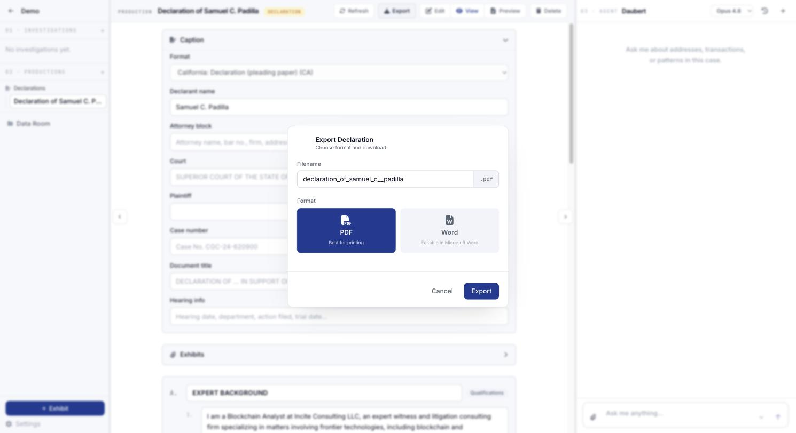
| Production | Available formats |
|---|---|
| Report | PDF Word |
| Chart | PDF PNG |
| Chronology | PDF PNG CSV |
| Declaration | PDFpleading paper Word |
| Redline | PDFclean Wordtracked changes |
The PDF is the faithful one. It carries the pleading gutter and per-page
line numbers. Word cannot represent a fixed gutter, so the .docx
comes out without it. Send Word when counsel needs to edit; file the PDF.
The + Exhibit button at the bottom of the sidebar assembles several items into one document. Each becomes a page in the final PDF.
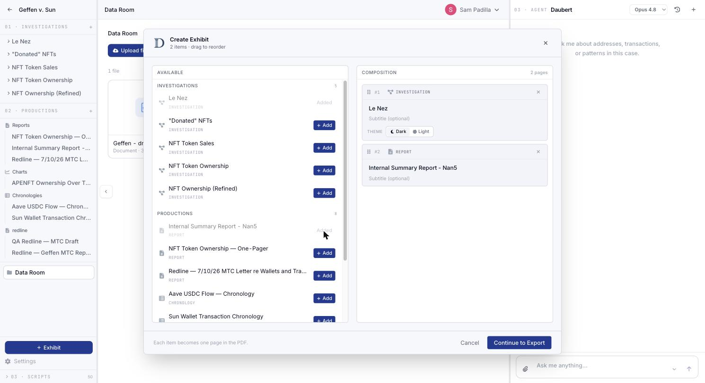
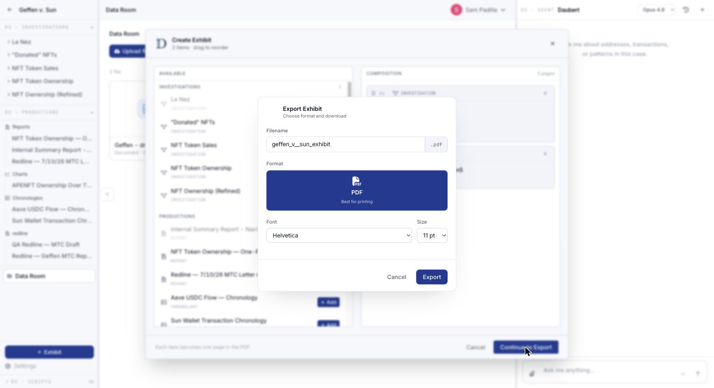
Graph snapshot → chronology → chart → summary report. It walks a reader from the picture, to the dated record, to the trend, to the argument, in the order they need it.
The assistant inside Daubert is not the only way to work. You can point the AI you already use, Claude or ChatGPT, straight at your Daubert cases. That is what "bring your own AI" means.
Ask about your case in the same window where you are already drafting, reading and researching.
Your AI can combine Daubert case data with documents and tools it already has access to.
Set it on a large, repetitive task and let it work through it against the real case data.
An outside AI gets exactly your permissions on exactly your cases, never more.
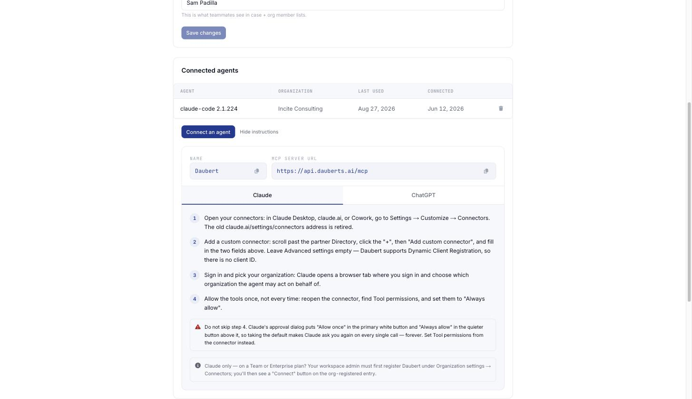
Both routes below ask you for the same two values. Have them ready.
| Field | Value |
|---|---|
| Name | Daubert |
| MCP server URL | https://api.dauberts.ai/mcp (keep the /mcp on the end) |
claude.ai/settings/connectors address is retired and now only tells you they moved.Claude's approval dialog puts Allow once in the obvious white button and Always allow in the quieter one above it. The path of least resistance, clicking the obvious button or pressing Cmd+Return, is the one that makes Claude ask again on every single call, forever.
This applies to Claude only. Your Claude workspace administrator has to register Daubert once under Organization settings → Connectors. After that you will see a Connect button on the entry they created, and you can skip straight to signing in and approving.
ChatGPT will not accept a custom MCP server until developer mode is on. That is the step people miss, so it is first. Note that its panel is called Plugins, not Connectors.
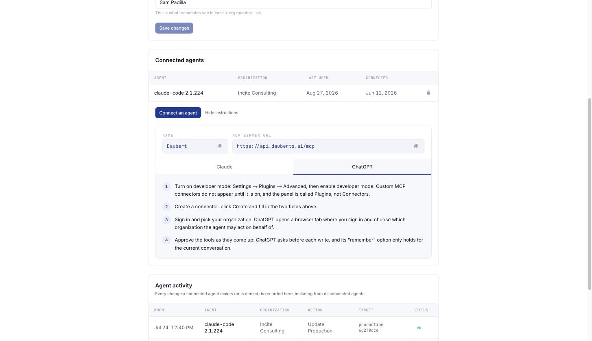
ChatGPT has no standing pre-approval. Its confirmation remembers a tool for the current conversation only, and a new conversation starts asking from scratch. Claude can pre-approve a whole group at once. If the asking becomes tiresome, that is the surface, not Daubert.
| Group | What it covers |
|---|---|
| Navigate | List your cases, open one, list its investigations. |
| Read | Case overview, graph data, productions, the entity registry, your firm's declarant profiles and boilerplate library, and the Data Room, including reading the contents of a file. |
| Blockchain | Fetch a wallet's transaction history, look up a single transaction, get address information. |
| Write | Create an investigation, import transactions onto a trace, and create or update productions, including declarations and redlines. |
The AI activity table on your Account page lists every change any connected AI has made on your behalf, including ones you have since disconnected. Check it after a long session; it is the fastest way to see exactly what changed.
A connected AI has real write access to real matters. Give it narrow, specific instructions, review the AI activity log afterwards, and revoke connections you are no longer using. If you are unsure whether an outside AI should be allowed to touch a case, do that work in the built-in assistant instead. It is scoped to one case at a time by design.
Ask your connected AI: "List my Daubert cases, then summarize the investigations and productions in the one called X." It is read-only, it proves the connection works, and it shows you the shape of what it can see.
| Problem | Try |
|---|---|
| Cannot see a case | Ask the case owner to add you under Settings → Members. |
| Cannot edit anything | You are probably a Viewer on that case. Check the role beside your name in Settings. |
| A fetch is slow or incomplete | Narrow the date range and lower the limit, then fetch again. Very active addresses page slowly by design. |
| Word redline export refuses | You need at least one accepted edit, and the source file must still be in the Data Room. PDF always works. |
| A connected AI stopped working | Check Account → Connected AIs. If your organization access changed, the connection is cut immediately by design. Reconnect. |
| Anything else | Ask the built-in assistant first. It knows the product and can explain any part of it in context. If that does not resolve it, email hello@dauberts.ai. |
You should not lose an afternoon to something a two-line reply can fix. If a fetch will not behave, a format is wrong for your court, or you simply cannot find where something lives, write to us. Tell us the case name and what you were trying to do, and we will pick it up.
hello@dauberts.ai